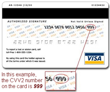

A CID is a special security code feature on your Visa, MasterCard, American Express, and Discover credit card.
How does my CID protect me?
CIDs are not raised, so they are not scanned into standard credit card readers. In theory, these numbers are only visible to you. When you give your CID to a merchant, you assist the merchant in verifying that the order is being placed by you, the card holder.
How do I find my Card Security Code?
Visa Credit Card Users
Flip your card over and look at the signature box. You should see a 16-digit credit card number followed by a special 3-digit code. This 3-digit code is your Card Security Code.
MasterCard Credit Card Users
Flip your card over and look at the signature box. You should see a 16-digit credit card number followed by a special 3-digit code. This 3-digit code is your Card Security Code.
